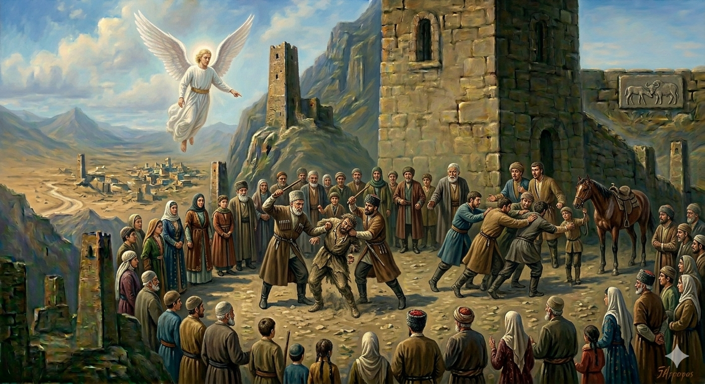

И.А. Дахкильгов. Хьехаме дувцарш - поучительные рассказы-притчи.
И.А. Дахкильгов. Хьехаме дувцарш - поучительные рассказы-притчи. Из ингушского фольклора.

Оаш из соца ца варах
Цхьан юрта вахаш хиннав геттар зуламе вола саг. Цо нах а боабора, къол а дора, къаьра дув а буар, - бӀеха мел дола хӀама цох доаллаш хиннадар. Цу юртара нах майдане цхьан гӀулакх вӀашагӀакхийттача, Ӏодессад Джабраил-малейк. Аьннад цо: - Шун юрта вахаш ва цхьаккхача бӀехача хӀамах хьадж ца кхеташ вола саг. Шуга хоам байта доссадаьд со. Из саг бахьан долаш кастлуш еррига шун юрт хӀалакъергйойла, дӀахайта. - Аьъ, - оалаш, цецбаьннаб нах, - из цхьа къотӀа бахьанце мишта хӀалакью дукха маьрша нах бахаш йола юрт? Тха массане фу бехк ба? - Шун бехк лаьрхӀаб цу сийдоацача сагаца нийсса болаш, хӀана аьлча, из зуламхо оаш дӀа ца ваккхарах, шоашта юкъе из маьрша дӀалелийтарах. Юртахоша етташ - Ӏетташ, гаьнна эрий ара дӀалаьллав из зуламхо.
РУССКИЙ
За то, что вы ему потворствуете
В некоем селе жил злодей, известный своими убийствами, воровством, клятвопреступлениями и прочими тяжкими злодеяниями. На сельском майдане - площади - по каким-то делам собрались сельчане. С неба спустился ангел Джабраил и сказал им: - В вашем селе свободно живет лютый злодей. Меня послали сообщить вам, что из-за него все ваше село на днях будет уничтожено. - Как так! - стали возмущаться люди. - Из-за какого-то одного ублюдка будут уничтожены все другие мирные люди. Чем они виноваты? - Вашу вину уравняли с виною этого злодея. Ваша вина в том, что вы не изгоняете его и тем самым потворствуете ему. Тут же сельчане приняли единое решение, жестоко избили этого негодяя и прогнали в далекую пустыню.
ENGLISH
For indulging him
In a certain village, there lived a notorious villain who was infamous for his murders, thefts, perjuries and other grave misdeeds. The villagers had gathered in the village square to conduct some business. The angel Jibrail descended from heaven and said to them, "A vicious villain lives freely in your village. I have been sent to tell you that, because of him, your entire village will soon be destroyed." "How can that be?" the people protested. "Because of one evil person, all the other peaceful people will be destroyed. What have they done wrong?" "Your guilt has been equated with that of this villain. You are guilty because you do not drive him out, thereby condoning his actions." The villagers immediately came to a unanimous decision: they beat the scoundrel mercilessly and drove him out into the distant desert.
НОХЧИЙН
Аш иза саца ца варех
Цхьана йуьртехь вехаш хилла гуттар зуламе волу стаг. Цо нах а бойура, къола а дора, къера дуй а баар, - боьха мел долу хӀума цунах доллуш хилла дар. Цу йуьртера нах майдане цхьана гӀуллакхан вовшехкхийтича, охьадоьссина Джабраил-малик. Аьлла цо: - Шун йуьртахь вехаш ву цхьанна а боьхачу хӀуманах хьожа ца кхеташ волу стаг. Шуьга хаам баийта доьссина со. И стаг бахьана долуш кеста йерриг шун йурт хӀалакйийр йойла, дӀахаита. - Аьъ, - олуш, цецбойлла нах, - и цхьа къутӀа бахьаница муха хӀалакьйо дукха маьрша нах бехаш йола йурт? Тхан массера хӀун бехк бу? - Шун бехк лерина цу сийдоцучу стагаца нийсса болуш, хӀунда аьлча, иза зуламхо аш дӀа ца ваккхарх, шайна йукъе иза маьрша дӀалелийтарах. Йуьртахоша йетташ - Ӏуьттуш, генна байлаьтте дӀалаьллина и зуламхо.
ПОГОВОРКИ
“Аз”, “аз” яьха саг “тхо”, “тхо” оалача ваьккхав. “Я”, “я” твердившего заставили говорить “мы”, “мы”.Вира тӀахайначох “вир” оал. Называют “ишаком” того, кто ездит на ишаке.Мехко баьккха бӀарг байнаб. Глаз, выколотый всем миром, остался неотомщенным.Наха тӀера хинджа-меза дайнад, шийна тӀера вира гола ейнаяц. На других и вошь с гнидою увидит, а на себе не видит ослиную голень.Нахана “бӀук” яха хьо волалой, наха “вакъ” оалийтаргда хьога. Будешь людям говорить “бук!” (возглас чванливости), они заставят тебя произнести “вак” (звукоподражание кваканию лягушки).Нахах кхардаш лийнар нахах ваьннав. Пренебрегавший людьми лишился народа.Нахаца ийначун рузкъа Ӏайнад, нахаца ийгӀачун рузкъа ийшад. Кто дружит с людьми – богатеет, а кто враждует – беднеет.Наьха дег тӀара вежар ваьттӀав. Выпавший из людских сердец (позабытый) разбился насмерть.“Саца” аьлча, соцаш воацар бӀеха соцаву. Кто не понял слова “перестань”, того остановили грубой силой.Харца лув саг топо мара къарвергвац. Лжеца лишь ружье остановит.Юртаца ийгӀачун кӀур лекъаб. У того, кто поссорился со всем селом, очаг потух.